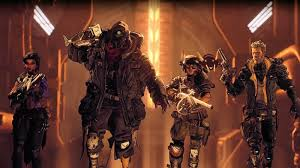
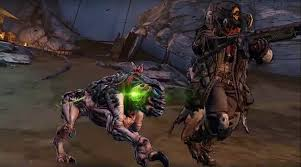
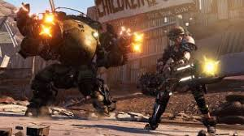
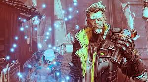
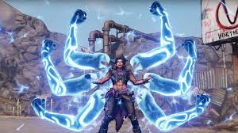

Borderlands 3 is an online and single player campaign shooter set in the fictional land of Pandora. At the start you choose 1 of 4 playable characters; Fl4k (the beast master), Moze (the gunner), Zane (the operative), Amara (the siren)
Each of the different characters do different things. The beast master can choose 1 of 3 pets to use in battle. One of the pets can constantly regenerate his health, another can improve his attack damage and the last one can boost his speed
Moze the gunner can get into her iron bear robot suit that can shoot bullets and a flamethrower. Its also acts as a shield so none of her characters health will be lost
Zane the operative can create a clone of himself which fights with him and he can also swap locations with his clone when he wants
Amara the siren can hold enemies in place and punch them with her electric hands doing loads of damage to nearby enemies
Gearbox developed the game and it was published by 2k games.The game made an appearance at the 2019 E3 event and it got a very positive reaction. Being one of the few games this year which showed actual gameplay unlike the clearly pre rendered battlefied 5. Its unique art style makes it one of the most different game
Borderlands 3 has a excellent and funny campaign but it can feel like a bit of a grind at sometimes. All of the guns in the game are completely free to use and the game isnt pay to win at all. There are billions of different guns all with 2 different firing modes
Other good games at E3The story is very complex so im going to go into more detail on my other page